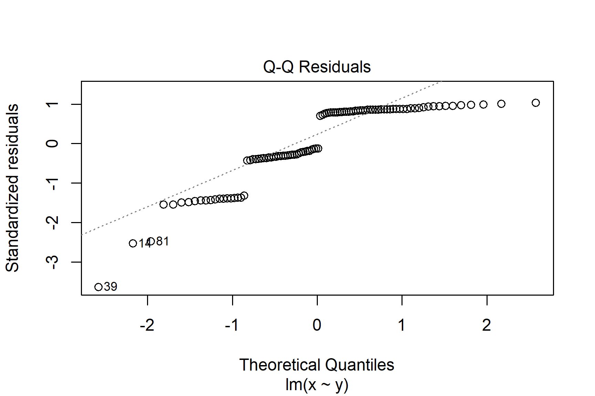

11 What is a statistical model
Important
You are reading a work in progress. This page is a dumping ground for ideas and not really readable.
11.1 What is a statistical model
A statistical model is a mathematical equation that helps us understand the relationships between variables. We think about how well our data fit a particular model to infer something about how the values arose or to make predictions about future values.
an equation that maps shows what has to be done to the explanatory values to get the response value. For example, if a plant grows by 2 cm a day week after it is two weeks old
height = height at two weeks + 2 * number of days after two weeks 2
or its height increase by 12% each day
height = height at 2 weeks * 1.12^ number of days
Imagine we are studying a population of bacteria and want understand how nutrient availability influences its growth. We could grow the bacteria with different levels of nutrients and measure the diameter of bacterial colonies on agar plates in a controlled environment so that everything except the nutrient availability was identical. We could then plot the diameters against the nutrient levels.
11.2 Types of model
linear, parametric non-parametric
11.3 Choice of model
before: appropriate to the question, type of relationship. assumptions about the type of model
and after asummptions about the probability calulations
implications of wrong choices: doesn’t anwser the question p value is inaccurate conclusions are wrong
11.3.1 General linear model assumptions
The assumptions of the general linear model are that the residuals are normally distributed and have homogeneity of variance. A residual is the difference between the predicted and observed value
If we have a continuous response and a categorical explanatory variable with two groups, we usually apply the general linear model with lm() and then check the assumptions, however, we can sometimes tell when a non-parametric test would be more appropriate before that:
- Use common sense - the response should be continuous (or nearly continuous, see Ideas about data: Theory and practice). Consider whether you would expect the response to be continuous
- There should decimal places and few repeated values.
To examine the assumptions after fitting the linear model, we plot the residuals and test them against the normal distribution
11.4 Linear models
We might expect the relationship between nutrient level and growth to be linear and add a line of best fit. See Figure 11.2.

The equation of this line is a statistical model that allows us to make predictions about colony diameter from nutrient levels. A line - or linear model - has the form:
\[ y = \beta_{0} + \beta_{1}x \tag{11.1}\]
Where:
- \(y\) is the response variable and \(x\) is the explanatory variable.
- \(\beta_{0}\) is the value of \(y\) when \(x = 0\) usually known as the intercept
- \(\beta_{1}\) is the amount added to \(y\) for each unit increase in \(x\) usually known as the slope
\(\beta_{0}\) and \(\beta_{1}\) are called the coefficients - or parameters - of the model.
Linear models are amongst the most commonly used statistics. Regression, t-tests and ANOVA are all linear models collectively known as the General Linear Model.
11.5 Model fitting
The process of estimating the parameters \(\beta_{0}\) and \(\beta_{1}\) from data is known as fitting a linear model. The line gives the predicted values of \(y\). The actual measured value of \(y\) will differ from the predicted value and this difference is called a residual or an error. The line is a best fit in the sense that \(\beta_{0}\) and \(\beta_{1}\) minimise the sum of the squared residuals, \(SSE\).
\[ SSE = \sum(y_{i}-\hat{y})^2 \tag{11.2}\]
Where:
- \(y_{i}\) represents each of the measured \(y\) values from the 1st to the ith
- \(\hat{y}\) is predicted value
Since \(\beta_{0}\) and \(\beta_{1}\) are those that minimise the \(SSE\), they are described as least squares estimates. You do not need to worry about this too much but it is a useful piece of statistical jargon to have heard of because it pops up often. The mean of a sample is also a least squares estimate - the sum of the squared differences between each value and the mean is smaller than the sum of the squared differences between each value and any other value.
The role played by \(SSE\) in estimating our parameters means that it is also used in determining how well our model fits our data. Our model can be considered useful if the difference between the actual measured value of \(y\) and the predicted value is small but \(SSE\) will also depend on the size of \(y\) and the sample size. This means we express \(SSE\) as a proportion of the total variation in \(y\), \(SST\):
\[ \frac{SSE}{SST} \tag{11.3}\]
\(\frac{SSE}{SST}\) is the residual variation - the proportion of variance left over after the model fitting. The proportion of variance explained by the model is called R-squared, \(R^2\). It is:
\[ R^2=1-\frac{SSE}{SST} \tag{11.4}\]
If there were no explanatory variables, the value we would predict for the response variable is its mean. Thus a good model should fit the response better than the mean. The output of lm() includes the \(R^2\). It represents the proportional improvement in the predictions from the regression model relative to the mean model. It ranges from zero, the model is no better than the mean, to 1, the predictions are perfect. Figure 11.3

Since the distribution of the responses for a given \(x\) is assumed to be normal and the variances of those distributions are assumed to be homogeneous, both are also true of the residuals. It is our examination of the residuals which allows us to evaluate whether the assumptions are met.
See Figure 11.4 for a graphical representation of linear modelling terms introduced so far.

11.6 General linear models in R
We use the lm() function in R to analyse data with the general linear model. When you have one explanatory variable the command is:
lm(data = dataframe, response ~ explanatory)
The response ~ explanatory part is known as the model formula.
When you have two explanatory variable we add the second explanatory variable to the formula using a + or a *. The command is:
lm(data = dataframe, response ~ explanatory1 + explanatory2)
or
lm(data = dataframe, response ~ explanatory1 * explanatory2)
A model with explanatory1 + explanatory2 considers the effects of the two variables independently. A model with explanatory1 * explanatory2 considers the effects of the two variables and any interaction between them. You will learn more about independent effects and interactions in Two-way ANOVA
We usually assign the output of lm() commands to an object and view it with summary(). The typical workflow would be:
mod <- lm(data = dataframe, response ~ explanatory)
summary(mod)
There are two sorts of statistical tests in the output of summary(mod): tests of whether each coefficient is significantly different from zero; and an F-test of the model overall.
The F-test in the last line of the output indicates whether the relationship modelled between the response and the set of explanatory variables is statistically significant.
11.7 Checking assumptions
TODO
The assumptions relate to the type of relationship chosen and hypothesis testing about the parameters. We assumed the relationship between diameter and nutrients is linear. The general linear model are that the residuals are normally distributed and have homogeneity of variance. A residual is the difference between the predicted and observed value
The assumptions of the model are checked using the plot() function which produces diagnostic plots to explore the distribution of the residuals. They are not proof of the assumptions being met but allow us to quickly determine if the assumptions are plausible, and if not, how the assumptions are violated and what data points contribute to the violation.
The two plots which are most useful are the “Q-Q” plot (plot 2) and the “Residuals vs Fitted” plot (plot 1). These are given as values to the which argument of plot().
11.7.1 The Q-Q plot
The Q-Q plot is a scatterplot of the residuals (standardised to a mean of zero and a standard deviation of 1) against what is expected if the residuals are normally distributed.
plot(mod, which = 2)
The points should fall roughly on the line if the residuals are normally distributed. In the example above, the residuals appear normally distributed.
The following are two examples in which the residuals are not normally distributed.

If you see patterns like these you should find an alternative to a general linear model such as a non-parametric test or a generalised linear model. Sometimes, applying a transformation to the response variable will result in better meeting the assumptions.
11.7.2 The Residuals vs Fitted plot

The Residuals vs Fitted plot shows if residuals have homogeneous variance or non-linear patterns. Non-linear relationships between explanatory variables and the response will usually show in this plot if the model does not capture the non-linear relationship. For the assumptions to be met, the residuals should be equally spread around a horizontal line as they are here:
plot(mod, which = 1)
The following are two examples in which the residuals do not have homogeneous variance and display non-linear patterns.


11.8 Reporting
When reporting the results of statistical tests we need to make sure we tell the reader everything they need to know and give the evidence it to support it. What they need to know is given in statements describing what difference or effect is significant and the evidence is from the test statistic and p-value from the test. You can think the statistical test values as being the evidence for the statements in your results sections, just as citations are the evidence for the statements in your introduction.
In reporting the result of a test we give:
the significance of effect
the direction of effect
the magnitude of effect
Figures should demonstrate the statement. Ideally they will include all the data and the ‘model’,i.e., means and error bars or the fitted line. Figure legends should be concise but contain all the information needed to understand the figure. https://blog.bioturing.com/2018/05/10/how-to-craft-a-figure-legend-for-scientific-papers/ - refer to figure in text